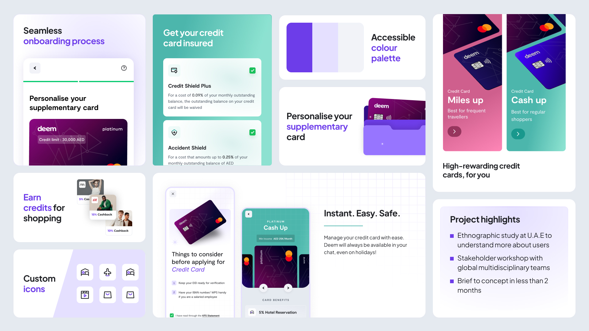
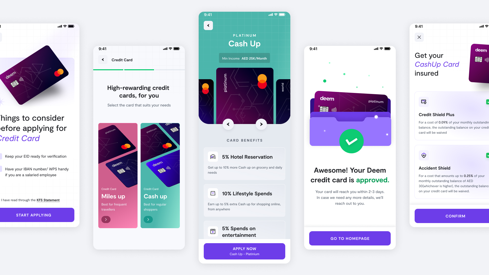
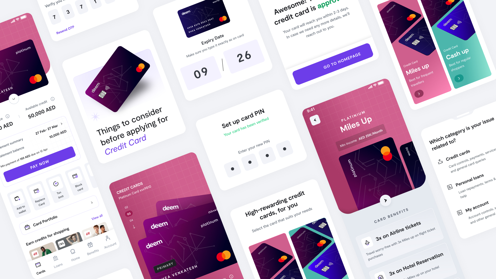
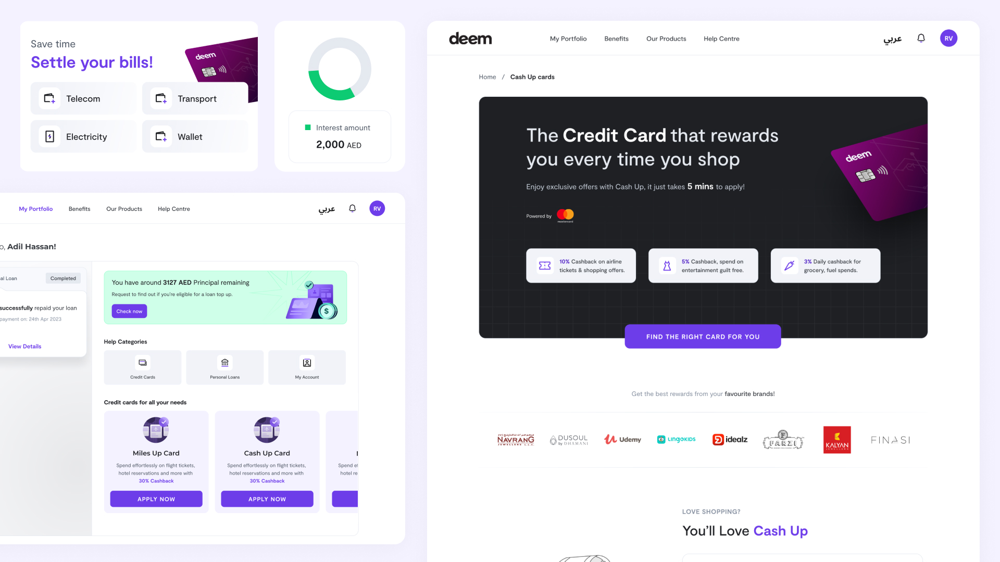
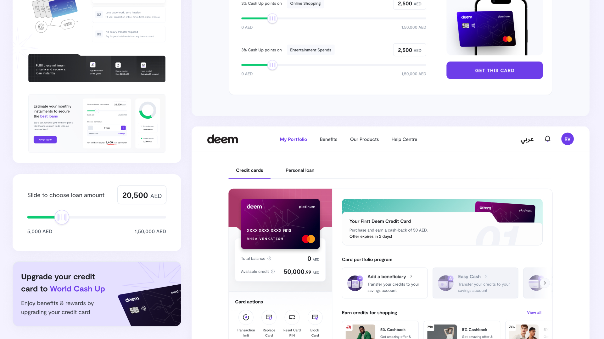

The old app was flat, cold, and lazy.
Deem's app wasn't broken in a dramatic way. It was worse, it was ignorable. Home was a stock hand-holding-a-card photo and one product row. The menu was a hamburger drawer. Cards you owned looked the same visual weight as cards you could apply for. The FAQ was walls of text with no categories, which is exactly why the support line rang all day. A 1.8 rating isn't a bug report; it's users giving up quietly.

Turning credit journeys into decisions.
Emirates ID auto-fetch onboarding
The old sign-up was a manual form. Users typed their name, ID number, address, DOB , fields that were already printed on the Emirates ID sitting on their desk. We rebuilt the flow around Intelligent Document Processing: scan the ID, auto-populate the form, verify.
Steps halved, duration halved, drop-off down 60%, registered users grew from 10K to 50K.
Card selection as a decision funnel
The old app dumped every card into a flat list, apply now, apply now, apply now. Users had to compare across rows with no framing. The two-bucket structure was the UX designer's call: pick type (Miles for travellers vs Cash for shoppers) → pick tier (Platinum → World). The rest, turning the card visual into the button, surfacing minimum-income upfront so users don't apply for what they can't get, sticky primary CTA, icon-led benefits, was where I lived.

FAQ with narrowing-down IA
The old FAQ was a scroll of answers. The new one lets users pick a category , Credit Cards, Loans, General, then jumps to the most-asked questions pulled from actual support-line data. "Raise a ticket" only appears when the question isn't listed. A structural choice, not a visual one, and the one that cut on-call queries by 80%.
Cards Portfolio, a state machine, not a dashboard
The real work in the Cards Portfolio wasn't the hero screen, it was the 15+ states behind it: no cards, blocked, unactivated supplementary, credit-limit nudge, minimum-payment-due, sensitive info hidden, and more. The UX designer catalogued the states. My job was to build the visual system so no cards and credit-limit nudge and minimum payment due all felt like one product.
Swipe for more →
Measuring the return on trust rebuilt.
The one number the client cared about at kickoff. The redesign was the primary release in the window, so the lift credibly belongs to it.


